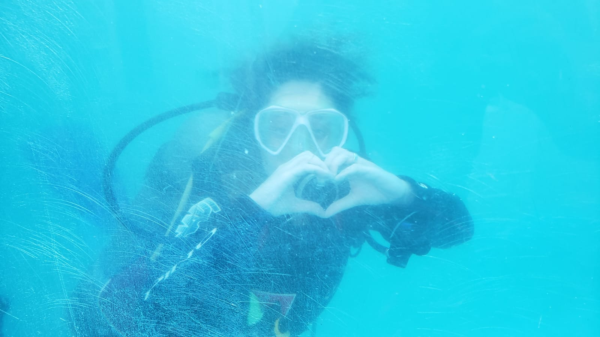

Scuba dive

Some facts about Dive
-
Once you get below 10 metres depth, you can’t see red or yellow! If
you cut yourself your blood looks blue.
-
Sound travels five times faster underwater than in air, which makes
it almost imipossible to establish where sound is coming from, as we
rely on the time difference between our ears to do so.
-
Oxygen becomes toxic when under pressure, so at depths greater than
42 metres, special gases with low oxygen are used.
-
Jacques Cousteau invented Scuba gear in 1943, calling his cylinder
the aqualung.
Some sites with good informations